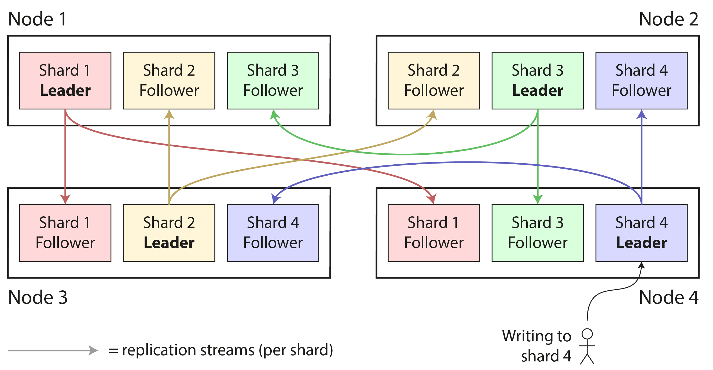
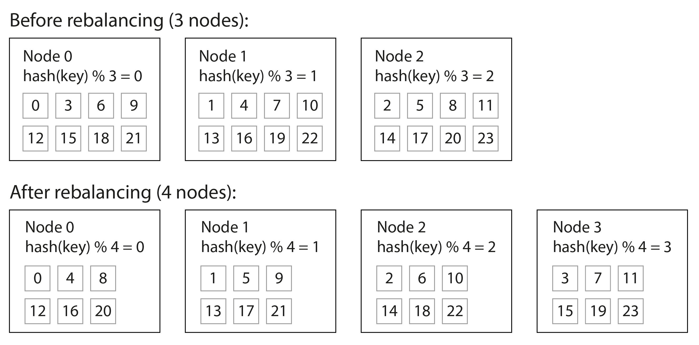
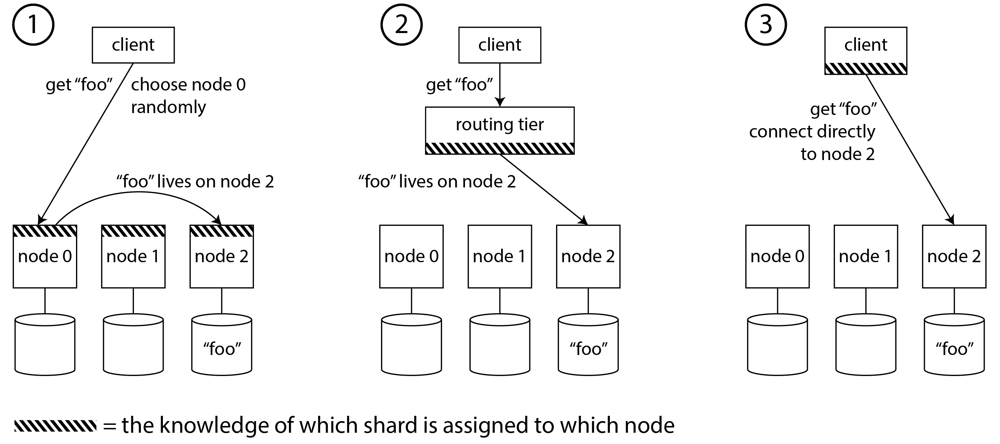
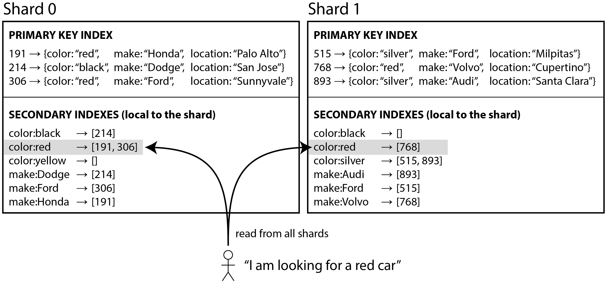
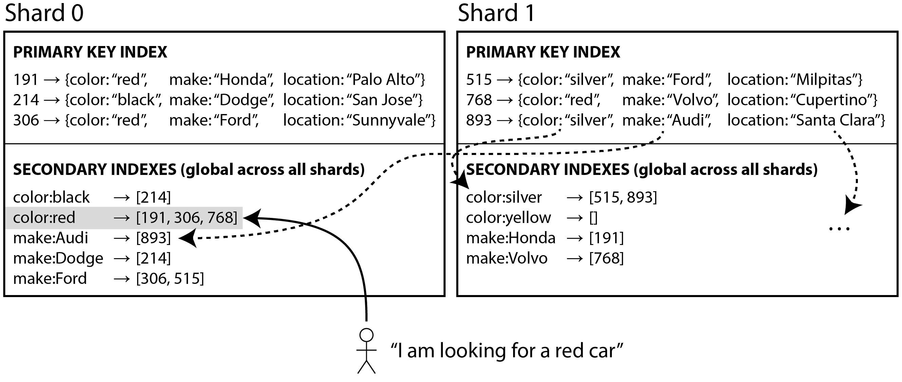

术语表 · 第 7 章 · 课程 7 / 14
分片
分片是全书唯一一个「用了就可能后悔、不用也可能后悔」的章节。它解决的是单机容量上限，代价是你从此要为每一个查询回答一个新问题：这个键，在哪个节点上。这一章的目标是让你在评审会上能把那个问题答得比提问的人更快。
显然，我们必须跳出电脑指令序列的窠臼，不能让计算机受此限制。我们必须陈述定义、指明优先级、描述数据；我们必须阐明关系，而不是编写过程。
Grace Murray Hopper，《未来的计算机及其管理》（1962）
7.0先问一句：真的需要分片吗
这一章的书里放在最后才谈「为什么要分片」，我认为该放最前，因为大部分分片方案的失败不是因为选错了算法，而是因为一开始就不该分。
书里的原话很硬：「复制可以提供容错和离线运行能力，因而无论规模大小都有用；分片却是一种重量级方案，主要适用于大规模场景。如果数据量和写入吞吐量仍可由单台机器处理，通常最好避免分片，坚持使用单分片数据库。」
这句话里的三个词必须扣准，否则你会把它读成「小系统别分片」这种废话：
「数据量」——不是行数，是工作集
单机能不能装下，取决于热数据能不能全进内存。10 亿行、每行 200 字节，约 200 GB，一台 512 GB 内存的机器轻松装下。真正的边界是「索引 + 工作集」超出单机内存后，随机读开始落到盘上，p99 才开始崩。
「写入吞吐」——不是 QPS，是 fsync 次数
单机 Postgres 的写入上限往往卡在每次提交一次 fsync（约 1–10 ms，取决于盘）。批量提交（group commit）能把这条线推到每秒几万次事务。先确认你是不是被 fsync 卡住，再谈分片。
「读吞吐不够」不等于「该分片」
这是评审里最常见的一处误判。如果瓶颈是读，第 6 章的读伸缩（加只读副本）就够了，而且它便宜、可逆、不需要改任何应用代码里的键。分片只解决「单机装不下 / 单机写不进」这两件事。把读问题当成分片问题解决，你会付出分区键选错的代价，却只得到本来加两个副本就能拿到的东西。
所以这一章的决策树从第一步就开始筛人：
能不能当场走完的分片决策树
① 真的需要分片吗？ → 读吞吐不够：加读副本（第 6 章）。写吞吐不够：先看批量提交、连接池、索引数量。存储不够：先看冷热分层、压缩、归档。三条都试过仍不够，才进下一步。
② 分区键选谁？ → 选几乎每个查询都会带的那个字段。判据是一句话：如果某个高频查询里没有分区键，它就要扇出到所有分片，等于白分了。
③ 范围还是哈希？ → 需要按分区键做范围扫描（时间区间、ID 区间、前缀匹配）就选范围；只要点查就选哈希。自增 ID 和时间戳作为分区键天然是热点，因为写入永远落在最后一个分片。
④ 能不能复合键折中？ → 前缀哈希 + 后缀排序。这是面试官最爱听的答案，下面单独讲。
⑤ 倾斜怎么办？ → 随机后缀拆键（只降写负载）、应用层缓存、把热键单独拎进一个分片。
⑥ 再平衡三选一。 → 固定分区数 / 动态拆分 / 按节点比例。选完再定自动还是手动。
⑦ 请求路由谁来做？ → 协调服务（ZooKeeper/etcd）、gossip、客户端路由。三种的失效模式完全不同。
⑧ 有二级索引吗？ → 有的话回到第 ②，因为二级索引的分片方式和主键分片方式几乎不可能是同一个，这里的取舍没有免费选项。

7.1分区键：一个决定锁死未来两年
书里对这一点的措辞很克制，但意思很重：「如果知道记录在哪个分片，访问就很快；如果不知道，就只能低效地搜索所有分片，而且日后很难更改分片方案。」
「日后很难更改」这五个字，是这一章最贵的五个字。改分区键意味着全量数据重写 + 双写过渡 + 读路径切换，在任何一个有千万级行的表上都按月计。所以这一步的判据要具体到能当场执行：
分区键的三条硬判据
一、覆盖率高。 数一下你的 TOP 10 查询，其中带这个字段的有几个？低于 9 个就要重新考虑。剩下那 1 个如果是低频的后台报表，可以接受；如果是核心路径，你就注定要扇出。
二、基数足够。 分区键的取值数要远大于分片数，否则一个取值就把你锁在一个分片上。用「国家」当分区键、80% 用户在一个国家，等于没分。
三、分布均匀且稳定。 不是今天均匀，是两年后仍均匀。用「客户 ID」分区，一个大客户成长 100 倍就会变成热点；用「租户 ID」分区则要接受大租户的存在。
书里还有一个更根本的提醒：分片天然适合键值数据，对关系数据则棘手得多。原因不是技术，是语义——关系模型的价值在连接（join）和二级索引，而这两个东西都需要跨分片。所以一个常见的架构演进轨迹是：关系库 → 加读副本 → 把大表拆成「按业务键可直接访问的」部分 → 剩下的复杂查询迁到分析库。分片是这条路上的第三步，不是第一步。
复合键折中：前缀哈希 + 后缀排序
书里的总结句值得原样背下来：「常见做法是以键的第一部分作为分区键（即用来确定分片），再按键的其余部分对分片内的记录排序。这样，对于分区键相同的记录，仍然可以高效执行范围查询。」
把它落到一个具体例子上，这是面试里最好用的一段：
例：物联网设备读数表
键设计成 (hash(device_id), timestamp)。第一部分对 device_id 取哈希，决定进哪个分片，于是同一台设备的读数全在一个分片里，且写入按设备天然分散。第二部分是 timestamp，在分片内部有序存储，于是「查这台设备昨天 14:00 到 15:00 的读数」是一次范围扫描，不是全表扫。
对比一下另外两种设计错在哪：只用 timestamp 当分区键 → 所有写入压最后一个分片，且查单台设备要扫所有分片；只用 hash(device_id) 当分区键 → 单设备查询很快，但时间范围查询要在分片内全扫。
这个设计的代价也要说清楚：它不能跨设备做时间范围查询（「所有设备昨天的异常读数」要扇出所有分片）。如果你的核心查询是这个，那这个键设计就是错的，这正是「分区键覆盖率」这条判据存在的原因。
7.2范围还是哈希：四种方案的真实代价
书里讲了五种（键范围、哈希取模、固定分片数、哈希范围、一致性哈希），但对评审来说，把它们压成一张表比逐个讲更有效。
表 7-1 的「节点数变化时的迁移量」一列是选型的真正分水岭：它决定了你未来扩容是「加机器」还是「停机重灌」。
| 方案 | 范围查询 | 节点数变化时的迁移量 | 谁在用 |
|---|---|---|---|
| 键范围分片 | 好，同分片内有序 | 小，只拆/合边界分片 | Bigtable、HBase、MongoDB 范围模式、CockroachDB、TiDB |
哈希取模节点数 hash % N |
无 | 灾难性，几乎全部键要动 | 只在教学里出现，生产不要用 |
固定分片数 hash % 1000 |
无 | 只搬整个分片，成本可控 | Citus、Riak、Elasticsearch、Couchbase |
| 哈希范围 + 动态拆分 | 无（但复合键后缀可有序） | 小，按需拆分 | YugabyteDB、DynamoDB、Cassandra 变体 |
| 一致性哈希 | 无 | 最小，只迁 1/N | Cassandra、ScyllaDB、各类缓存集群 |
为什么 hash % N 是灾难：书里的例子，3 个节点扩到 4 个，哈希值 0、3、6、9 的键全部要换节点：原来是 % 3，现在是 % 4，除了少数恰好同余的，每个键的位置都变了。这意味着扩容时你要搬走几乎全部数据。这条之所以值得单独记，是因为它是唯一一个「看起来最自然、实际最不能用」的方案，而面试里恰恰常有人这么答。

固定分片数：为什么是 1000 而不是 10
书里的例子：10 节点集群，一开始就划 1000 个分片，每节点 100 个；键落在 hash(key) % 1000 号分片，而「分片 → 节点」的映射单独记录。加一个节点时，从现有节点挪一部分分片过去即可，键到分片的映射一点没变。
这个设计里有两个容易被忽略的判断点：
分片数为什么是「因数很多的数」
书里原话：「分片数量通常会选成一个因数很多的数字，使数据集能够均匀分配到多种不同规模的节点集群中，例如不必要求节点数是 2 的幂。」1000 能被 2、4、5、8、10、20、25、40、50…整除，于是你在 8 节点、10 节点、20 节点时都能分得整齐。选 1024 就只能配 2 的幂。这条在实际评审里很有用：对手如果选了 1024，你可以直接问「那你们 10 个节点怎么分」。
分片大小的「恰到好处」区间
书里指出一个真问题：分片数固定、数据量增长时，每个分片的大小同比变大。「分片太大，再平衡和从节点失效中恢复都会十分昂贵；分片太小，又会带来过多管理开销。」经验区间通常在每分片 1–10 GB：小到能在一分钟内从一个节点复制到另一个节点，大到不至于让元数据成为负担。
7.3倾斜与热点：均匀的哈希，不均匀的负载
书里这句话是整章的题眼：「一致性哈希可以保证键大致均匀地分布到各节点，却不能保证实际负载也同样均匀。」
「数据均匀」和「负载均匀」是两件不同的事，混淆它们的代价很具体。一个名人账号可能只占 1 MB 数据，却承担 30% 的读请求。哈希函数对此完全无能为力——它保证的是键的数量均匀，不是每个键的热度均匀。
也可以在应用层补偿倾斜。例如，如果已知某个键非常热，一种简单办法是在键的开头或末尾添加随机数。只需两位十进制随机数，就能把针对该键的写入均匀拆成 100 个不同的键，让它们分布到不同分片。
不过，写入分散到不同键之后，读取就得付出额外代价：必须从全部 100 个键读取数据，再把结果合并起来。热键分散后，每个分片承受的读取量并没有减少，降低的只有写入负载。这种技术还需要额外的记录工作：只有少数热键值得添加随机数；对于写入吞吐量很低的绝大多数键，这样做只会徒增开销。因此，还需要记录哪些键已被拆分，并设计一个流程，把普通键转换成需要特殊管理的热键。
这段摘译里藏着一个很多人读漏的结论：随机后缀只降写负载，不降读负载。因为读的时候你必须把 100 个键都读一遍再合并：原来 1 个分片承受全部读，现在 100 个分片各承受 1/100，但合并请求的那个客户端要等 100 个响应，尾部延迟反而更差。
所以热键的三条对策要按读写性质分开用：
写热点：随机后缀拆键
适用场景是「计数器 / 追加写」。点赞数、播放量、指标打点都属于这类。代价是读要合并，所以通常配一个离线汇总任务，而不是让在线请求去合 100 份。
读热点：缓存，不是拆键
名人主页的读，正确解法是 CDN + 应用层缓存，因为读是幂等的、可缓存的。拆键对读热点完全无效——你只是把同一个值复制了 100 份。判据：这个热键的读，能不能容忍几秒的陈旧？能就缓存，不能才考虑单独分片。
读写都热：把热键单独拎进一个分片
书里提到，按键范围或哈希范围定义分片时，可以把一个热键单独放进一个分片，甚至给它分配一台专用机器。这是最贵的方案（要人工识别 + 迁移），但对「双十一的某个商品」「热搜的某条内容」这种可预测的尖峰最有效。
7.4反例：全自动再平衡 + 自动故障检测 = 级联失效
反例
一个 24 节点的自建分片集群，开启了全部自动化：分片大小超过阈值自动拆分、节点心跳超时 10 秒自动判定失效并触发再平衡、再平衡全自动无需人工确认。团队的理由是「云数据库都这么干，我们也应该」。
某个周五晚上，一个节点的磁盘开始出现坏块，读延迟从 2 ms 涨到 400 ms。节点还活着，只是慢。
① 心跳超时 10 秒 → 其他节点判定它失效 → 触发再平衡，把它的分片分给其余 23 个节点。② 这 23 个节点本来就有正常负载，突然要多接 1/24 的数据，加上网络传输本身的带宽占用，几个节点的响应时间也开始逼近 10 秒。③ 于是它们也被判定失效，再平衡范围扩大到 22 个节点、21 个节点……④ 因为「自动拆分」和「自动迁移」同时生效，拆分产生的新分片也要迁移，元数据服务被压垮，路由表开始不一致，此时已经分不清哪个节点是「真死」。
书里对这条路径的原话是：「这会给其他节点和网络施加额外负载，让局面进一步恶化，甚至引发级联失效：其他节点也相继过载，并被错误地判定为已经宕机。」
注意这里没有任何一个环节是「bug」。每个机制单独看都是合理的：坏盘该被发现，过载该被缓解，分片该被均衡。崩的原因是三个负反馈环叠在一起变成了正反馈。
改法有四条，按性价比排序：① 再平衡必须有人确认（Couchbase 和 Riak 的做法就是「自动生成建议，管理员提交才生效」），这一条几乎免费，直接切断级联；② 失效检测阈值要远大于再平衡耗时，比如心跳 30 秒、再平衡单批不超过 5 分钟，让两者不在同一时间尺度上共振；③ 限制再平衡带宽和并发迁移数，把它当成后台的低优先级流量；④ 区分「慢」和「死」：灰色失效不该触发迁移，只该触发告警和摘流。
最后一条尤其重要：摘流（把流量从慢节点移走）和迁移数据（把分片搬走）是两件事，前者可以秒级自动，后者必须克制。 大多数云数据库的「自适应容量」做的其实是前者。
7.5请求路由：三种做法，三种失效模式
书里给了三种：任意节点转发、独立路由层、客户端感知分片。评审时该问的不是「选哪个」，而是「分片分配变化时，谁先知道、多久知道、知道错了会怎样」。

表 7-2 里「分片分配变化时的最坏情况」一列，是三种方案的真实分界线。
| 做法 | 分片分配变化时的最坏情况 | 适用 |
|---|---|---|
| 任意节点转发 | 旧节点仍持有数据但已不该服务，可能出现短暂的双写或读陈旧；多一跳延迟 | 分片少、变化少的场景；实现最简单 |
| 独立路由层 | 路由层自己成为瓶颈和单点；它挂了你全站不可用，所以必须多副本 + 共识 | 分片多、客户端语言杂；MongoDB mongos、Vitess 走这条 |
| 客户端感知 | 客户端缓存的映射过期，会一直打到错误节点直到刷新；版本不一致的客户端行为不同 | 追求最低延迟；但客户端升级变成基础设施问题 |
三种做法都需要一个「分片 → 节点」的权威映射，而维护这个映射的组件本身要防脑裂。书里点名了两种实现路径，它们的一致性强度差一个数量级：
共识型：ZooKeeper / etcd / 内置 Raft
用共识算法保证映射唯一，防止两个协调者给出矛盾的分片分配。HBase、SolrCloud 用 ZooKeeper；Kafka、YugabyteDB、TiDB 用内置 Raft；MongoDB 用配置服务器。代价是多一个组件、多一次网络往返。
gossip 型：Cassandra / ScyllaDB / Riak
节点间用流言协议传播集群状态。书里明说：「它提供的一致性比共识协议弱得多，因而可能出现脑裂，使集群的不同部分对同一个分片持有不同的节点分配。」能这么干，是因为无主复制本来就只承诺弱一致。
这个对比之所以重要：你不能在强一致存储上套一个 gossip 路由层。如果你的数据层承诺线性一致，路由层却允许两个客户端对「键 K 在哪个节点」有不同答案，那强一致就在路由这一层被吃掉了，而监控上看不出来——它表现为偶发的「读到了不该存在的旧值」，排查成本极高。
7.6二级索引：这一章唯一没有免费选项的地方
如果只能记住这一章的一节，记这节。因为它是评审里最容易被含糊带过、又最容易在半年后爆掉的地方。
问题很简单：主键分片之后，「按颜色查车」这种查询怎么办？color 不是分区键，所以你不知道去哪个分片找。两种解法，各有各的死法。
本地索引：写便宜，读昂贵

在这种索引方式中，每个分片都完全独立：各自维护自己的二级索引，只覆盖本分片中的记录，而不关心其他分片保存了什么数据。每次写入数据库——添加、删除或更新记录——只需处理包含该记录的分片。
但是，如果需要全部结果，又事先不知道这些记录的分区键，就必须把查询发送到所有分片，再合并返回结果，因为匹配的记录可能散布在每个分片中。这种查询分片数据库的方式，会让二级索引上的读取查询变得相当昂贵。即使并行查询所有分片，也很容易出现尾部延迟放大。它还会限制应用的可伸缩性：增加分片能容纳更多数据，但如果每次查询仍要由所有分片处理，查询吞吐量并不会随之提高。
最后那一句要读三遍。它的意思是：本地索引让你能存更多数据，但不能查得更快。这句话在很多「我们分片了所以能扩容」的架构文档里是缺席的：他们扩容了存储，却把查询 QPS 的上限锁死在「单分片 QPS ÷ 分片数」……不，更糟，是锁死在「单分片 QPS」（因为每个查询都要打到所有分片）。
尾部延迟放大（tail latency amplification）在这里是数学必然，不是工程失误：假设单分片 p99 是 100 ms、p999 是 500 ms，查 20 个分片等全部返回，那整体 p99 大约对应「20 个请求里至少一个超过 p99」的概率，也就是接近单分片的 p95；而整体 p999 会接近单分片 p99 之后的更远处。经验公式：扇出 n 个分片后，整体 p99 ≈ 单分片 p(1 − 0.01/n)。20 个分片时，整体 p99 ≈ 单分片 p99.95。这就是为什么「每个分片都很快」的系统整体很慢。
全局索引：读便宜，写昂贵

color:red 只读一个分片，但写入一辆红车要更新另一个分片上的倒排列表。全局索引把索引本身按词项分片：颜色 a–r 一个分片，s–z 一个分片。于是查 color = red 只需读一个分片，这是它唯一的、也是决定性的优势。
代价在写入侧，而且不是「慢一点」的程度：
写入一条记录，可能影响多个索引分片
一辆车有颜色、品牌、年份、地区四个索引字段，四个字段的词项可能落在四个不同分片上。书里的原话是：「写入一条记录可能影响索引的多个分片（文档中的每个词项都可能位于不同分片）。因此，二级索引很难与底层数据保持同步。一种办法是使用分布式事务，以原子方式更新保存主记录的分片及其二级索引分片。」
注意这句话的落脚点：要保证一致性，你需要分布式事务：也就是第 8 章那个跨节点原子提交，它的代价我们在 L8 会算。很多系统选择的替代方案是放弃原子性，让索引异步更新。
异步更新的真实含义：读到陈旧值
书里点名 DynamoDB：「在 DynamoDB 中，写入会异步反映到全局索引，因此从全局索引读到的结果可能是陈旧的（类似于复制延迟的问题）。」
这不是小瑕疵，它改变了 API 的语义：写完立刻按索引查，可能查不到自己刚写的东西。如果你的业务代码里有「创建订单 → 立刻用 GSI 查该用户的订单列表」这样的路径，它就是一个间歇性失败的 bug，而且只在写入量大时出现。
所以这一节的结论必须写成一句能贴进评审文档的话：本地索引与全局索引的取舍是「写放大 vs 读放大」，而这两个放大的量级不对称——本地索引的读放大是 O(分片数) 的网络往返，全局索引的写放大是 O(索引数) 的跨分片事务。前者可以靠缓存和并行缓解，后者只能靠放弃一致性或付 2PC 的钱。
7.7面试里怎么答
「订单表到 10 亿行了，怎么分片？」
「先反问一句：瓶颈是存储还是写入？如果是存储，先看冷热分层和归档能不能解决，因为分片一旦上了就下不来。确定要分，我选 merchant_id 作为分区键，理由是订单的 90% 查询都带商户上下文：商户后台的列表、对账、结算，全都能定位到单个分片。分片方式用固定 1024 个逻辑分片、hash(merchant_id) % 1024，再叠一层分片到物理节点的映射，这样扩容时只搬分片不改键。倾斜用大商户单独占分片解决。我们监控 TOP 1% 商户的写入占比，超过 5% 就人工摘出来。二级索引的取舍我选本地索引：订单查询几乎都带 merchant_id，扇出很少发生；全局索引的跨分片事务代价我不愿意付。」
这段答案的结构值得单独看：反问 → 排除 → 选键 + 理由 → 算法 + 扩容路径 → 倾斜兜底 → 索引取舍 + 放弃什么。六步，每步都带一个具体数字或条件。这就是「被追问就崩」和「被追问反而加分」的分界线。
如果面试官继续追「那跨商户的运营后台查询怎么办」，答案要直白：「扇出所有分片，加超时和部分结果降级，或者把这类查询导到分析库。我不会为了 5% 的查询去改 95% 查询的键设计。」
练习这四个方案，哪里先出事
四段真实的分片设计。找出最先崩的那一环。
日志系统按 timestamp 的范围分片，写入永远是「当前时间」，查询总是「最近一小时」。
时间戳单调递增，所以新数据永远落在键范围最大的那个分片——其余分片只承接历史查询，写入端只有一个分片在干活。这是「范围分片 + 单调递增键」的经典死法。修法：前缀加哈希（如 hash(service) + timestamp），或者用哈希范围分片但保留分片内按时间排序。
电商订单表用 hash(order_id) % 16 分片，16 台机器。查询是「某用户的订单列表」和「某订单的详情」，前者占 80%。
哈希均匀地打散了数据，也打散了「同一用户的订单必须在一起」这条业务局部性。order_id 不满足「覆盖率」判据：只覆盖 20% 的查询。正解是把分区键换成 user_id（80% 覆盖），order_id 作为分片内的唯一键——但那样「按订单号查详情」也要带 user_id，这是必须写进 API 契约的约束。
10 节点集群、1000 个固定分片，开启全自动再平衡；同时用 10 秒心跳超时做失效检测。某晚一台机器网卡降速。
慢 ≠ 死。10 秒心跳 + 全自动迁移会让「一台变慢」升级成「全部过载」。切断这条链最便宜的办法是让再平衡需要人工确认（Riak/Couchbase 的做法），或者把失效阈值拉到远大于单批迁移耗时。
车辆表按 vehicle_id 哈希分片，color 和 make 上有全局二级索引，写入时用异步方式更新索引。产品要求：新增车辆后立刻能在「按颜色筛选」的列表里看到。
异步更新 GSI 就意味着「写完立刻按索引查」不保证看得到，这是 API 语义层面的破损，不是性能问题。要么改成同步更新（付分布式事务的钱），要么在应用层做「写后读补偿」：新写入的记录在本地缓存里保留几十秒，与索引结果合并后再返回。
练习给一个真实业务选键
一个 SaaS 工单系统：每个租户（tenant）有 10–500 个坐席，工单表预计 3 亿行/年，保留 5 年。核心查询有四类：① 坐席打开「我的待办」（带 tenant_id + assignee_id）；② 租户管理员看「本租户所有未结工单」（带 tenant_id + status）；③ 客户按工单号查询进度（只带 ticket_id）；④ 运营做「全平台本周工单量趋势」（不带 tenant_id）。请给出分区键、分片方式、以及你放弃的查询。
提示：四类查询里有三类能带 tenant_id。第四类该怎么处理，是这一题的分水岭。
分区键：tenant_id。分片方式：固定分片数 + 哈希，hash(tenant_id) % N，N 取一个因数多的数（如 4096），再叠一层「分片 → 物理节点」映射。
理由逐条对齐四类查询：① 和 ② 都带 tenant_id，落在单分片，且分片内可以按 (status, updated_at) 建索引做范围扫描；③ 只带 ticket_id——这是这题的陷阱，如果工单号本身编码了租户信息（生成时把 tenant 的短哈希拼进去，类似雪花 ID 的前缀），就能反解出分片，点查依然是一次单分片请求；如果不能，就只能扇出，所以工单号的设计必须在建表前定好，事后改不动。④ 不带 tenant_id，放弃：不在在线库做，用 CDC 把变更流进分析库（第 12 章），在那里做全平台统计。
倾斜兜底：租户规模差 50 倍，所以监控「单分片承载的租户总量」，超过阈值时把大租户迁到独占分片。这一步要预留「分片可以只放一个租户」的能力，否则大客户成长时无解。同时给 tenant_id 建一张「租户 → 分片」的路由表缓存在客户端，避免每次查询都过路由层。
放弃了什么，必须写清楚：放弃了「无租户上下文的跨租户查询」，以及放弃了工单号在系统外的可猜测性（如果选择把租户信息编进去，就要额外加随机段防止枚举）。这两条要进架构文档的「已知限制」一节，否则半年后会有人来问「为什么运营后台查不了全平台数据」。
一个诚实的补充：如果 ④ 其实是产品最核心的看板，那这个键设计就是错的——应该反过来，把分析型查询作为一等公民，用宽表 + 列存单独承载，而不是硬塞进 OLTP 分片库。
7.8带走什么
这一章真正教会人的，不是五种分片算法，而是三个「先问」：先问要不要分片（读不够就加副本）；先问分区键覆盖率（有查询不带键就等于没分）；先问二级索引怎么切（本地还是全局，这一步没有免费选项）。
贴进评审文档的话：「本系统按 tenant_id 哈希分片，固定 4096 个逻辑分片、分片到节点映射独立维护，扩容只迁移整分片不改键。二级索引采用本地索引，代价是跨租户查询需扇出全部 4096 个分片（尾部延迟放大，p99 ≈ 单分片 p99.99），因此此类查询已从在线路径移除，改由 CDC 同步至分析库承载。已放弃的不变式：不保证跨分片事务，跨租户聚合最多滞后 5 分钟。监控指标：单分片写入占比（阈值 5%）、扇出查询的 p99 与其分片数、再平衡期间的单批迁移量与网络占用。」
一手资源
第 7 章 分片（中文全译） — 值得对照读的是「固定数量的分片」与「按哈希范围分片」两节，它们回答的是同一个问题的两种答案：分片数该固定还是该跟着数据长。
随时问我
把你现在这张表的分区键和 TOP 5 查询发我（SQL 或 ORM 调用都行）。我帮你数一下有几个查询不带分区键，那个数字就是你要付的扇出成本，通常比预想的多。